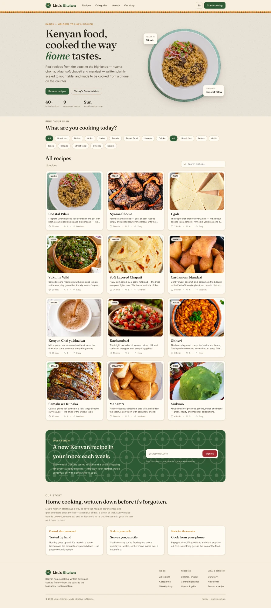
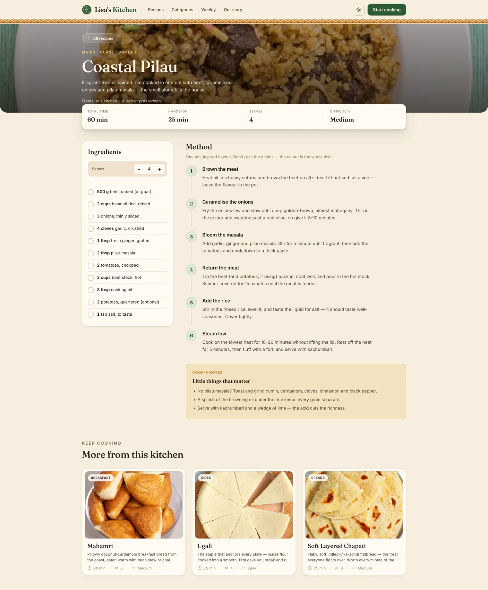

Lisa's Kitchen
Lisa's Kitchen is my wife's — her way of saving three generations of Kenyan family recipes and handing them down to our children before they slip away. My job was to build a home worthy of that. This is the honest version of how it happened: personal, non-linear, doubling back, and letting the food decide.

Overview
This one was personal in a way the others aren't. Lisa's Kitchen is my wife's legacy — her way of holding onto the food her grandmother cooked, that her mother cooked, that she now cooks, so she can hand it down to our children before it slips away. Recipes like these usually live in one person's hands and leave the room with them. She didn't want that to happen to hers.
So the platform is really a preservation project wearing the clothes of a recipe site: Kenyan home cooking from the coast to the highlands — nyama choma, pilau, soft chapati, mandazi, githeri, sukuma wiki — written plainly, scaled to your table, and built to be cooked from a phone propped on the counter. The test it has to pass is simple and unforgiving: the dish has to turn out the same in your kitchen as it does in hers.
My part was to build the vessel worthy of that — research, design, build and deploy, as the sole architect of the platform. Knowing whose recipes these were raised the stakes on every small decision. And what follows isn't a tidy Discover → Define → Design → Deliver march. It genuinely wasn't. It was closer to cooking a big pot of pilau: you start it, you taste it, you realise the onions aren't dark enough, and you go back.
It didn't start as a website
It started at our own kitchen table — and in a mess of WhatsApp voice notes. My wife would ask her mum how to make something, and the answer would come back as a two-minute audio clip with not a single quantity in it: a handful of this, cook it until it looks right. The recipe existed, but only inside her mum's hands. That was the exact thing we were trying to catch before it was gone.
So the first thing I built wasn't a homepage — it was a single recipe page. Before I knew what the brand looked like, or what the navigation was, or whether this was even a "website," I wanted to see whether one of her family's recipes could be written down in a way that actually survived contact with a kitchen. The Coastal Pilau page came first. The landing page you see now was one of the last things I designed, and I rebuilt it twice.
The product is the recipe page. The homepage is just the front door. I got that backwards at first — spent a day on a hero before I'd proven a single recipe held up — and had to correct course.
That reordering set the tone for the month. I stopped treating "research" as a phase with a start and an end. It kept happening the whole way through — mostly in the form of cooking these dishes myself, sending the drafts back to my wife and her mum, discovering that what I'd written didn't work, and going back to fix it.
Getting the Kenyan-ness wrong, first
My first instinct for making it feel Kenyan was, frankly, heavy-handed. Full kanga-cloth backgrounds. Loud pattern behind everything. A flag-adjacent palette. It looked like a tourism poster, not a kitchen. It was trying so hard to say "this is Kenyan" that it stopped feeling like her home, which was the entire point.
I pulled almost all of it out. What survived is a single, restrained band of woven kitenge pattern that sits just under the header — the way a strip of cloth sits on a table, present but not shouting. One quiet texture did more than a whole background ever did. That was the first time the project taught me the lesson it kept teaching: restraint reads as confidence; decoration reads as insecurity.
The other early wrong turn was the palette. My first pass was a bright, minty green on white — clean, "modern," and completely generic. It looked like every food-delivery startup. The problem wasn't that it was ugly; the problem was that it felt like nowhere.
Colour came from the food, not a palette tool
Once I stopped picking colours from a generator and started pulling them off actual plates, the palette wrote itself. Every colour on the site is a food or a kitchen surface:
- Parchment / warm cream — the base of everything, taken from ugali and flour and the paper you'd scribble a recipe on. It's the tablecloth the whole site is laid out on.
- Deep forest-olive green — sukuma wiki, kitchen herbs, the rim of the enamel plates the food is served on. It became the primary, used for the logo, the buttons, and the numbered cooking steps.
- Terracotta / spice amber — pilau masala, the crust on a mandazi, the "KARIBU" welcome kicker. It's the accent that carries all the little cultural cues.
- Brick red — used almost nowhere except the one action that matters most on the page, the newsletter Sign up. Scarcity is what makes it work.
Grounding the palette in the food did something I didn't fully expect: it made the photography and the interface feel like one dish instead of a UI wrapped around some pictures. The green plate rim in the hero and the green step-numbers on the recipe page are, quietly, the same green.
Two typefaces having the project's argument
The headline face went through several candidates before it settled. I wanted the warmth of an old recipe book — a high-contrast serif with real personality, the kind that can set the word home in italic and make it feel like it means it. But early on I over-indexed on character and picked something so expressive it was genuinely hard to read at a glance, which is a problem when someone's reading it mid-stir with steam in their face.
So the type became a deliberate pairing, and honestly it's the argument the whole product is having, in two fonts:
- An expressive serif for headings and recipe titles — heritage, warmth, the feeling that these dishes come from somewhere.
- A clean, sturdy sans for ingredients, steps and measurements — utilitarian, legible at arm's length, no romance where you need a number.
Heritage in the headline, precision in the instructions. That tension — recipes cooked by feel, written down with rigour — is the product in one line, and the typography carries it without anyone needing it explained.
Designing for greasy hands and a propped-up phone
The most useful research wasn't a survey. It was handing my phone to my wife and her mum mid-cook and watching what went wrong. That's where nearly every "nitty" decision on the recipe page came from.
People don't read a recipe while cooking — they glance at it, look away for two minutes, and come back having lost their place. Their hands are wet or oily, so they don't want to scroll precisely. There's a hot sufuria between them and the screen. Once I'd watched that a few times, the recipe page more or less designed itself:
- Tick-off ingredients. Every ingredient is a checkbox, so you can mark what's already in the pot and not re-read the whole list. This came directly from watching someone add the onions twice.
- Big, numbered, one-action steps. Each step is a bold action title — "Brown the meat," "Caramelise the onions" — with the detail underneath. You can find your place from across the counter.
- A "serves" stepper that does the maths. Set how many you're feeding and the quantities rescale. Nobody should be doing fractions over a hot pan.
- Ad-free, on purpose. The one rule that never moved: nothing gets between the person and the food. No pop-ups, no auto-playing anything, no "jump to recipe."
- The stat cards up top — total time, hands-on time, serves, difficulty — because the real first question is always "do I have time for this right now?"

The Coastal Pilau page — the first screen I designed and the last one I stopped fussing over.
The scaling maths quietly broke everything
The serves stepper sounds trivial. It was the single messiest thing in the build. "Scale a recipe" is easy until you meet real ingredients: you can double 500 g of beef, but you can't meaningfully double "salt, to taste," and doubling "2 potatoes, optional" to four when the person didn't want potatoes in the first place is just noise.
I went back and forth on this more than anything else. Scale everything and the recipe fills with ugly fractions and nonsense precision. Scale nothing and the feature is a lie. The answer I landed on was to decide, per ingredient, what's actually a ratio and what's a judgement call — the measurable things scale; the to-taste and the optional things hold steady and stay human. It's a small thing on screen and it took a disproportionate share of the month.
Half of designing this was deciding what not to automate. A recipe isn't a spreadsheet, and the moments where you trust the cook are the moments that make it feel like home cooking instead of a machine.
Writing down what's usually left unsaid
The thing that makes a home recipe work is never in the ingredient list. It's the tacit knowledge — don't rush the onions, the colour is the whole dish — that a bare recipe throws away. If the platform only captured quantities, it would technically preserve the recipe and completely lose the cooking.
So two things became load-bearing:
- Cook's Notes. A warm callout at the bottom of every recipe — "Little things that matter." Substitutions (no pilau masala? here's what to toast and grind), the trick that keeps the rice grains separate, why you serve it with kachumbari and lime. This is where her grandmother's and mother's voices actually live — the corrections they'd give you if they were standing at the stove beside you.
- The copy voice. The words code-switch the way Kenyans genuinely talk. Karibu. Chakula. Sufuria. Pull up a chair. The Sunday newsletter is framed as "the way your mother would send you off with something to cook," and the fine print reads "Free. No spam — just chakula." None of that is decoration; it's the difference between a database of recipes and a kitchen you're welcome in.
The regional framing does the same job structurally. Recipes are organised by region as well as by course — Coast / Swahili, Central highlands, Nyama & grills — so "8 regions of Kenya" isn't a marketing stat, it's the actual map of where this food comes from. A breadcrumb reading MAINS · COAST · SWAHILI tells you the lineage of the dish before you've read a word of it.
What got cut when the month ran out
A one-month sprint that covers research, design, build and deployment means the scope has to lose an argument with the calendar, repeatedly. Some of my favourite ideas didn't make it, and that was the right call.
- Cut: a full meal-planner and an auto-generated grocery list across recipes. Lovely, and a completely different, bigger product. It would have eaten the whole month and shipped nothing.
- Nearly cut, kept: the regional taxonomy. It was more work than a flat list, but it's so central to what the food is that dropping it would have hollowed the project out.
- Survived the cut: the serves stepper. Every time I looked at trimming it, I remembered it solved a real, felt pain, so it stayed even though it was the most expensive small feature in the build.
- Shipped "just enough": search and the category filters are deliberately simple. Good enough to find a dish in twelve, honest about not being more than that yet.
Cutting the planner freed up the time that made the recipe page actually good. That trade — fewer features, cooked properly — is the same philosophy as the recipes themselves: cooked, then measured. Nothing goes up until it's been made by hand and the amounts are pinned down.
Where it landed
What shipped is a warm, unhurried, phone-first place to cook Kenyan food: 40+ tested recipes across eight regions, a homepage that lets you filter by what you're actually cooking today, a Sunday recipe drop, and a recipe page built for wet hands and a propped-up phone. Deployed and live.
Owning the whole stack — research through deployment — meant no decision got lost in a handoff. When I learned something at the stove — or when my wife or her mum did — I could change the design and ship the fix the same day. The cost was that I had to be honest with myself about what was working, because there was nobody else to catch it.
The biggest thing I'd carry into the next project: the messy, doubling-back version was the process, not a failure of it. The strongest decisions here — one strip of cloth instead of a background, colours pulled off plates, deciding what not to automate, building the recipe before the homepage — all came from going the wrong way first and being willing to walk back. Like the pilau, you don't get the colour by rushing it.
But the real measure of this one was never going to be traffic or time-on-page. It's that years from now our children can open Lisa's Kitchen and cook their great-grandmother's pilau exactly the way she made it — that the handful of this, pinch of that finally has somewhere safe to live. That's the legacy my wife set out to protect. My part was making sure the thing that holds it is built with as much care as the recipes deserve.